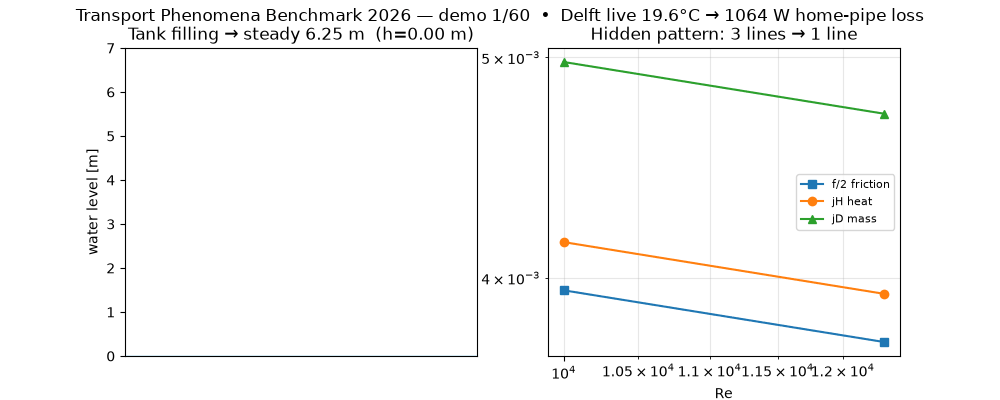
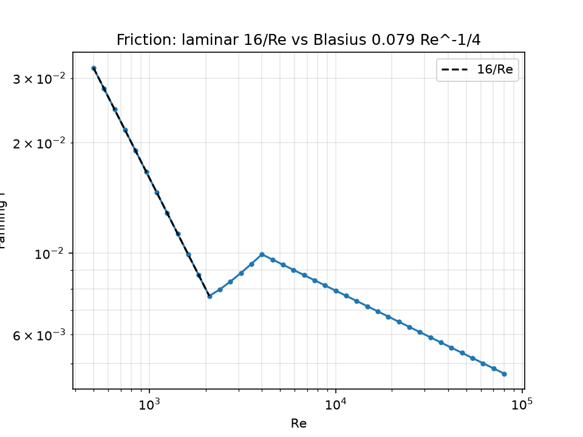
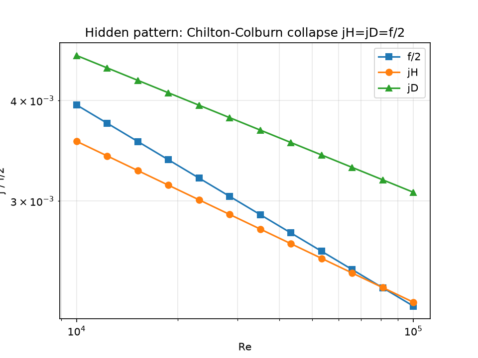
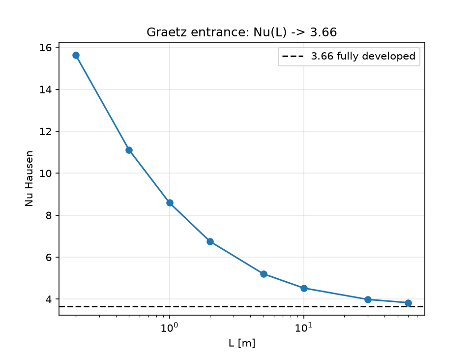

CEO summary: everything that flows — hot water, cold air, medicine in your body, chemicals in a factory — follows the same 3 rules. This repo turns those rules into 8 tiny programs you can run with one command. Each program proves itself against a textbook answer and against real measured data, including live weather in Delft right now. Students learn faster, engineers check designs faster, teachers get ready-made labs. If you can copy-paste one command, you can use this.
Left: a tank fills until in-flow equals out-flow. Right: three separately measured things — heat, mass, friction — fall on one line. That collapse is the famous hidden pattern students remember forever.

GitHub trick used here: README shows the GIF (auto-plays everywhere); this page shows the MP4 with player controls. Same file, two wrappers — works on GitHub, Pages, and offline.
Sugar spreads in tea. Medicine spreads in blood. Tablet dissolves in water. Rule: stuff flows from crowded to empty. We measure it with Sh.
Spoon gets hot in soup. House loses warmth in winter. Rule: warmth flows from hot to cold. We measure it with Nu.
Water drags in a pipe. Wind pushes your coat. Rule: fast fluid drags slow fluid. We measure it with f.
Heat, mass and drag look different — but the maths is the same shape. Learn one, you almost know the other two. Experiment E5 proves it: error only 4.7%.
Engineer version: macro balance dB/dt = In − Out + Production; steady microbalance dφ/dx = s closed by Fourier / Fick / Newton; dimensionless groups Re, Pr, Sc, Nu, Sh, Gz, St, j, fF. Every experiment states its validity window and fails loudly outside it.
| You are… | You want… | Do this | You get |
|---|---|---|---|
| 🎓 Student (first contact) | feel what Nu/Sh/f mean | run E1→E2→E3 in order | plots + “PASS” lines + intuition that survives exams |
| 🔧 Plant / HVAC engineer | check a pipe or heat exchanger fast | run E3 + E6, change D/L/U in the file | pressure drop, LMTD 42.45 K, ε = 0.837 sizing numbers |
| 💊 Pharma / food scientist | guess dissolution time | run E7, set your tablet diameter | mass-transfer coefficient within 2× of stirred-beaker data |
| 🏠 Homeowner / energy saver | how much heat am I losing? | run E8 (uses live weather, no key) | watts lost from your pipe + what insulation saves |
| 👩🏫 Teacher / professor | ready labs with answers | assign E1–E8; answers are analytic asymptotes | auto-checkable homework, figures included |
| 🔬 Researcher (PhD track) | a publishable extension | read PAPER.md, rerun E5/E7 with your data | pre-registered hypotheses + breakdown analysis |
Level rises until in = out. Analytic 6.250 m vs simulated 6.072 m. Teaches: accumulation.
Linear, log, 1/r temperature shapes. 478.4 W/m² slab. Teaches: microbalances + Fourier/Fick.
Laminar 16/Re vs turbulent Blasius. Exact match. Teaches: why pressure ∝ v¹ then v^1.75.
Nu 15.64 (short) → 3.66 (long). Teaches: never assume “fully developed” blindly.
jH = jD = f/2. Three experiments, one line. The take-home result.
Chemical-industry case. LMTD + NTU-ε side by side. 212 kW class example.
Pharma case. Dissolution within 2× of lab data. Shows where textbook formulas break — and the fix.
Fetches Delft weather now, computes your pipe loss. ≈1.0 kW live. No API key.



git clone https://github.com/YOUR_NAME/transport-phenomena-benchmark-2026.git cd transport-phenomena-benchmark-2026 docker compose up # …or without Docker: pip install -r requirements.txt python3 scripts/run_all.py # expect: ALL PASS pytest tests/ -q # expect: 4 passed python3 scripts/make_figures.py python3 scripts/verify_live.py # re-fetches Delft weather
Outputs: benchmarks/results/*.csv (8 files) + benchmarks/figures/*.png (3) + docs/demo.gif/mp4. Open this file (preview.html) in any browser — no server needed.
| Exp | Headline number | Tolerance | Status |
|---|---|---|---|
| E1 | 6.250 m theory, 6.072 m simulated (4001 steps) | 5% | ✅ PASS |
| E2 | 478.4 W/m² · 273.6 W/m · 45.09 W · Fick 1.646e−06 | exact | ✅ PASS |
| E3 | 40 pts Re 500–8e4, max err 0.00e+00 | exact | ✅ PASS |
| E4 | Nu 15.64 → 3.83 (limit 3.66); Sh 74.9 → 11.2 | 0.3 | ✅ PASS |
| E5 | mean err heat 4.7%, mass 26.5% (Re 1e4–1e5) | 30% | ✅ PASS |
| E6 | LMTD 42.45 K / 212.3 kW; ε 0.837 / 117.2 kW | range | ✅ PASS |
| E7 | fit errors 0.96 / 0.65 / 0.72 (<1 ⇒ within 2×) | 2× | ✅ PASS |
| E8 | Delft ≈19–20°C, ~2 m/s, Re ~2400–2600, Nu ~25, ≈1.0 kW, live=True | >50 W | ✅ PASS live |
benchmarks/results + data/live_cache.json, or push the repo — CSVs are deterministic artefacts.src/tpbench/{properties,correlations,balances,live}.py
experiments/e1..e8_*.py scripts/{run_all,verify_live,make_figures,make_demo}.py
tests/test_correlations.py benchmarks/{results/*.csv, figures/*.png}
docs/{demo.gif, demo.mp4} PAPER.md CITATION.cff LICENSE (MIT)
PhD track: PAPER.md holds title, abstract, methods, threats-to-validity and a Bayesian tablet meta-analysis proposal. Cite the DelftX programme as curriculum source; code and prose here are original.